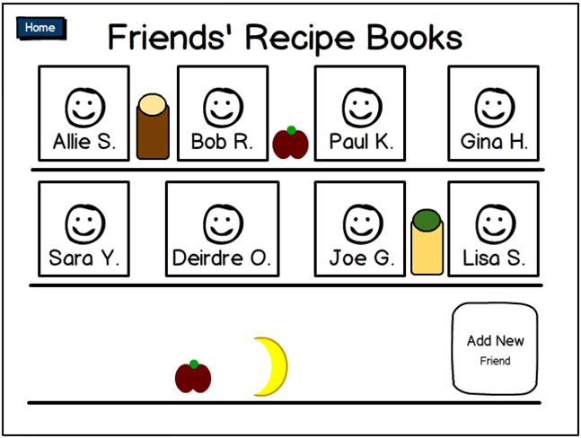
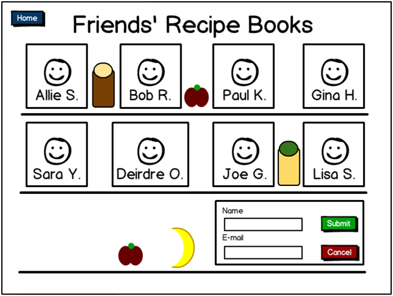
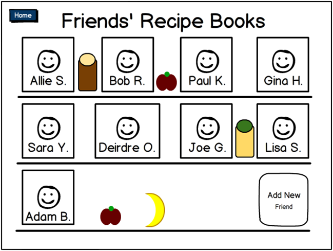
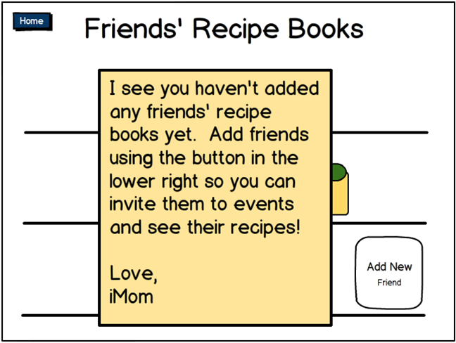

The user can access his or her friends' recipe books by tapping the "Friends' Recipe Books" button on the main page. The image below shows the result of that, with a populated shelf of recipe books.
Tapping the "Add New Friend" button allows the user to add a new friend to his or her recipe book. The image below shows the dialog for adding a new friend by name and e-mail.
After a friend has been added, his or her recipe book appears on the shelf, as shown below (with Adam B. added).
When the user first starts using the app, he or she will not have any friends added. The iMom note, shown below, suggests to users how to add friends and start using the app. A similar iMom note can be found on the "My Recipe Book" page.
